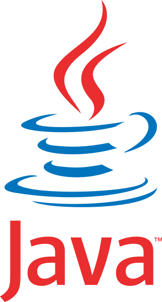
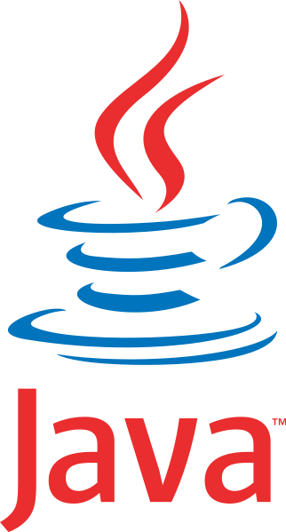
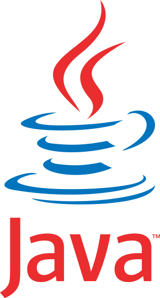

LENGUAJES Y TECNOLOGÍAS


 



DESARROLLADOR WEB Y ANALISTA DE DATOS JR


Una aplicación web que permite verificar en tiempo real si los usuarios están registrados en un evento. La app está optimizada para dispositivos móviles y cuenta con una interfaz responsiva.

Plataforma web diseñada para gestionar y validar la asistencia en el evento WiDS 2024. Ofrece una experiencia optimizada para los participantes, con una interfaz adaptada a dispositivos móviles.

Implementación del algoritmo de compresión Huffman, que utiliza un árbol binario para codificar datos de forma eficiente, reduciendo el tamaño de archivos sin pérdida de información.
Plataforma interactiva para el WiDS Datathon 2024, que permite aplicar modelos predictivos y visualizar patrones y tendencias de datos, facilitando el análisis y la comprensión de grandes volúmenes de información.

Chatbot educativo desarrollado con la API de ChatGPT para brindar soporte personalizado a estudiantes principiantes en Fundamentos de Programación, mejorando su interacción con el contenido académico.
Octubre 2024 - actual
FIEC, Guayaquil, Ecuador
- Asistir a estudiantes con ejercicios de programación y resolver problemas de código.
- Dedicar 2 horas por semana a revisar tareas y proporcionar retroalimentación constructiva.
- Ofrecer 1 hora semanal de consulta para apoyar las necesidades de aprendizaje de los estudiantes.
Julio 2024 - actual
TAWS, ESPOL, Ecuador
- Coordinar la recolección y análisis de datos para identificar tendencias y patrones.
- Presentar informes y visualizaciones de datos que faciliten la comprensión de los resultados.
Septiembre 2024 - actual
FIEC, ESPOL, Ecuador
- Analizar tendencias y patrones en grandes volúmenes de datos para obtener insights valiosos.
- Desarrollar y optimizar modelos de Machine Learning para resolver problemas específicos de negocio.
- Utilizar herramientas de inteligencia artificial para mejorar la precisión y eficiencia de los modelos predictivos.